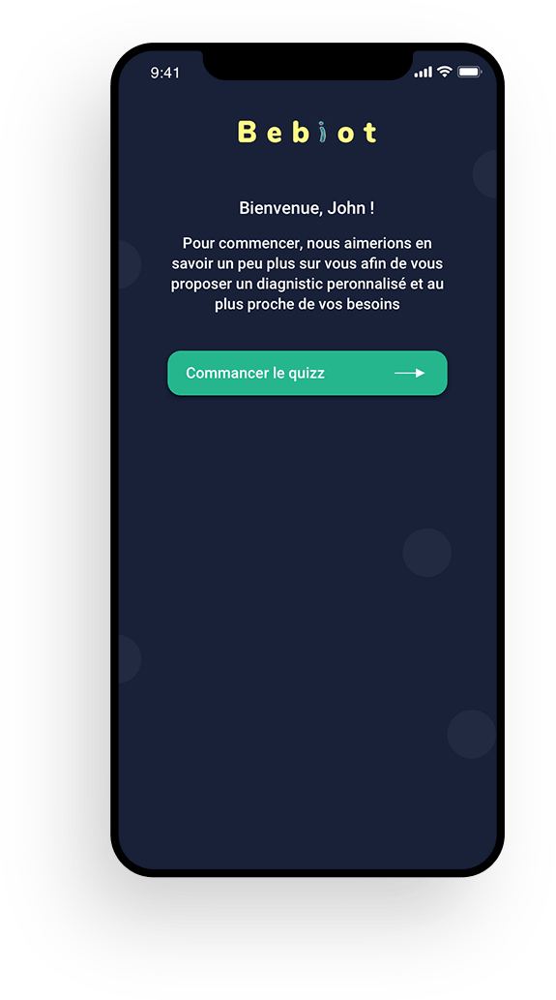
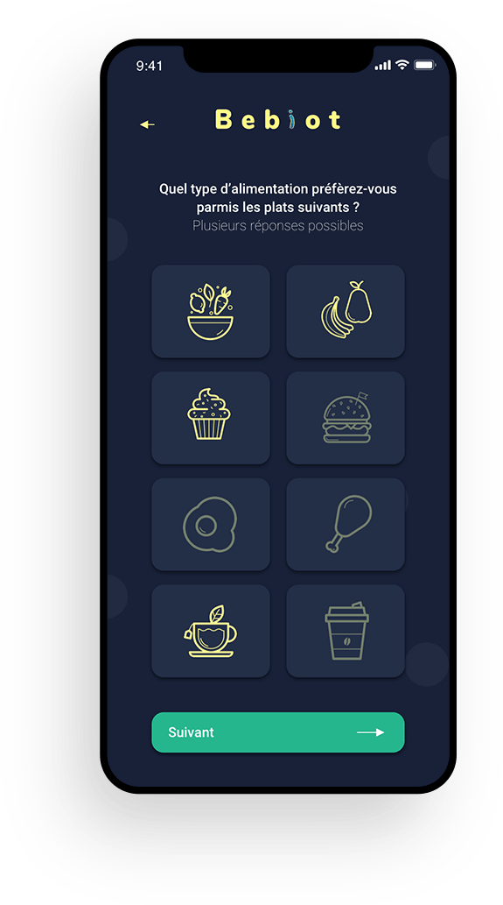
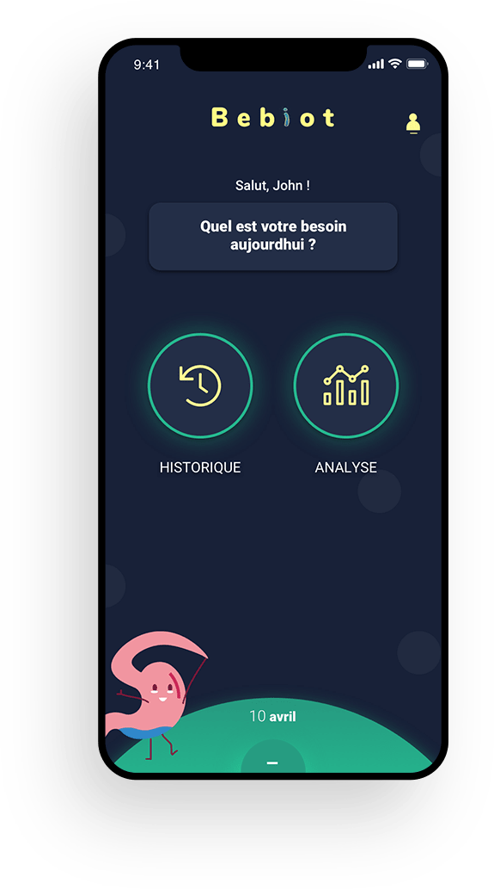
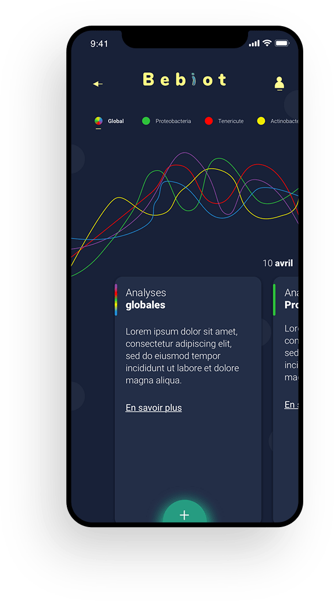
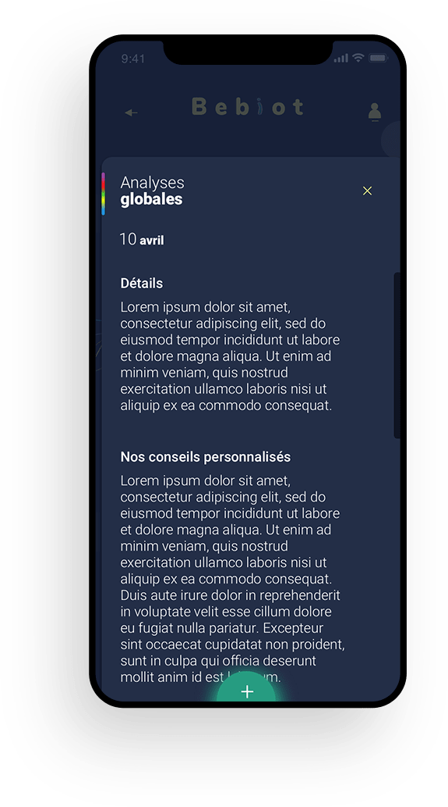

TAKE CARE OF YOUR MICROBIOTA TO IMPROVE YOUR WELL-BEING
Bebiot is the result of a project that was created during a business game for AXA. The initial
objective
was to imagine "how our alimentation will impact our well-being by 2030?". We went looking for
weak signals that point to future changes, or possible new discoveries. In our case, we identified
the development of our knowledge about the microbiota can be linked with mental health
problems.
After having identified this point, we imagined for AXA an application and a device that would
allow anyone to check daily its microbiota in order to to take care of it and protect our mental
health.
- Monitor your microbiota on a daily and non-intrusive basis: your microbiota composition evolves over time and can be altered by stress exposure for example. Thanks to your portative scan, you can follow the evolution of your microbiota day by day, rather than doing a fecal test once. A user-friendly interactive tracking table allows you to follow your history, identify painful events and see your improvements.
- Anticipate and prevent events that might affect your wellbeing: you know that you are going to have a stressful, painful event in the coming days? Mark it on your personal calendar and benefit from personalized advice, foods and recipes to help you feel better. Connect BeBiot to your smart food printer to eat the adequate meal.
- Personalize your diet: it is essential to eat food that make you feel good. If you wish to, Bebiot can suggest personalized recipes, that you could even print if you have a connected 3D food printer at tome, and products from our selected partners, based on the composition of your microbiome.
- Limit medication: depression is mainly treated with medication, but nutrition can be a complementary way to deal with your depressive symptoms and reduce the use of drugs. It will also be better for the environment as drugs consumption leads to water pollution[1].
- Integrate nutrition into your overall health journey: you can share your data with your health professionals. Of course, our application has obtained the maximum "Healh Data Protection" label. This allows you to choose precisely with whom you want to share your data.
Login & profil setup



Microbiota analysis


